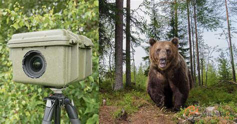
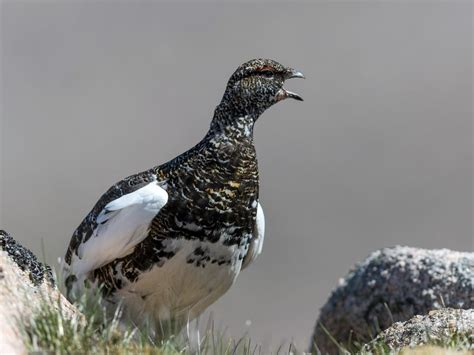
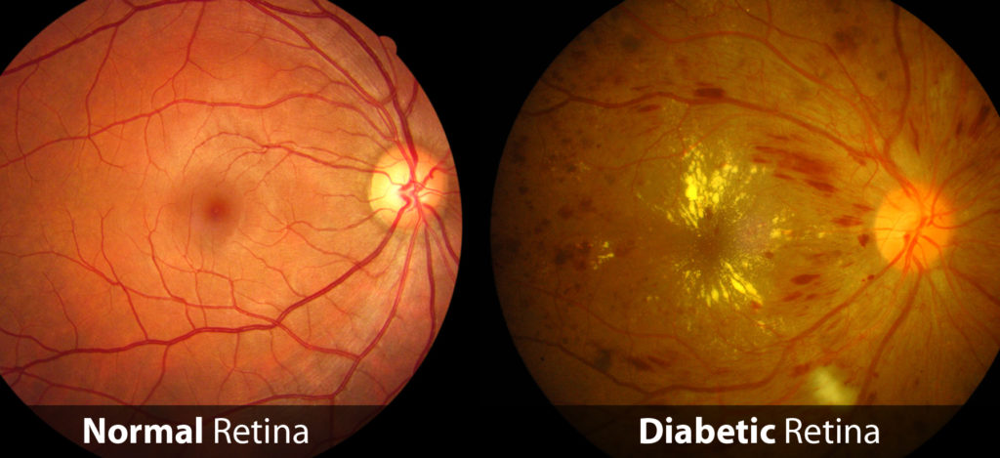
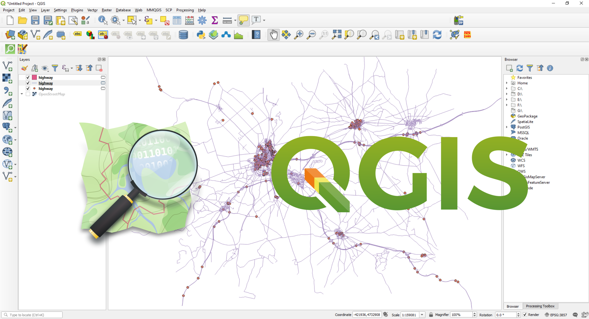

01 // about
Danilo
Ortelli
Data scientist & engineer working at the intersection of AI, conservation tech, and medical imaging.
MSc Responsible AI — OPIT
WSL Thesis Collaborator
Conservation Mind Intern
Ex-Medacta Biomedical Eng.
Politecnico di Milano
Engineer turned data scientist with a background in energy and biomedical engineering. I specialize in deep learning for high-stakes real-world problems — from tree species classification in alpine forests to retinopathy grading and wildlife monitoring. Passionate about fairness-aware modelling and interpretability.
02 // interests
What I work on
Conservation Tech
Wildlife monitoring, species ID, and ecological AI pipelines for biodiversity protection.
Medical Imaging AI
CT/MRI analysis, retinopathy grading, and interpretable deep learning for clinical support.
Computer Vision
Object detection, segmentation, metric learning, and Grad-CAM explainability.
Responsible AI
Fairness-aware modelling, bias detection, and explainability in high-stakes systems.
03 // education & certs
Education
MSc in Responsible AI
OPIT University — Thesis with WSL (Swiss Federal Institute for Forest, Snow and Landscape Research)
2024–2026
PgDip in Data Science
ProfessionAI
2022–2023
MSc & BSc in Energy Engineering
Politecnico di Milano
2011–2018
Certifications
AI for Good
QGIS — Geographic Information Systems
PGCert in Biodiversity Management
04 // experience
Experience
2024 – present
MSc Thesis — Tree Species Classification
WSL — Switzerland
Semantics-driven deep learning for tree species classification in alpine environments. Collaboration with the Swiss Federal Institute for Forest, Snow and Landscape Research.
2024 – present
Data Science Intern
Conservation Mind — Remote
Building CV pipelines for automated wildlife monitoring. Object detection and tracking in camera trap imagery.
Mar 2022 – present
Energy Engineer
Banca Popolare di Sondrio (BPER Group) — Italy, Hybrid
Data cleaning and statistical analysis for carbon footprint normalisation across buildings. Used Python, Excel, VBA and QGIS for emissions analysis. Contributed to data-driven GHG reduction scenarios supporting a −8% annual emissions reduction roadmap.
Dec 2017 – Feb 2022
Biomedical Engineer
Medacta International — Ticino, Switzerland
CT/MRI analysis and 3D segmentation for orthopaedic surgical planning. Patient-specific implant design using SolidWorks and Mimics.
05 // projects
GitHub Repositories

Bear-Detector
YOLOv8-based object detection pipeline for automated bear identification in camera trap imagery. Includes tracking with SORT and MobileNetV2 classification.

bird-acoustics-classifier
Deep learning pipeline for bird species identification from acoustic recordings using EfficientNet-B0 on mel-spectrograms.

diabetic-retinopathy-grading
Ordinal classification of diabetic retinopathy severity using EfficientNet-B0 and CORAL loss. Grad-CAM explainability and MLflow tracking. QWK ~0.86.
social-media-toxic-filter
NLP multi-label toxicity classifier using HateBERT on the HateXplain dataset. Includes robustness testing against text obfuscation.

Italy Special Protection Areas Map
Geospatial mapping of Special Protection Areas (ZPS/SPA) across Italy. Data processing and visualisation with QGIS and Python.